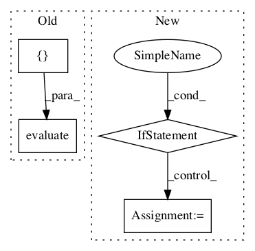

c611d9b6b35e44326bc18096dc57abe18eb6c90b,tf_agents/replay_buffers/tf_uniform_replay_buffer_test.py,TFUniformReplayBufferTest,testMultiStepStackedSampling,#TFUniformReplayBufferTest#Any#,232

Before Change
replay_buffer = tf_uniform_replay_buffer.TFUniformReplayBuffer(
spec, batch_size=batch_size)
actions = tf.stack([tf.Variable(0).count_up_to(10)] * batch_size)
add_op = replay_buffer.add_batch(actions)
steps, _ = replay_buffer.get_next(num_steps=2)
self.evaluate(tf.compat.v1.global_variables_initializer())
for _ in range(10):
self.evaluate(add_op)
for _ in range(100):
steps_ = self.evaluate(steps)
self.assertEqual((steps_[0] + 1) % 10, steps_[1])
After Change
for i in tf.range(10, dtype=tf.int64):
replay_buffer.add_batch(tf.ones((batch_size,), dtype=tf.int64) * i)
if tf.executing_eagerly():
steps = lambda: replay_buffer.get_next(num_steps=2)[0]
else:
steps, _ = replay_buffer.get_next(num_steps=2)
self.evaluate(tf.compat.v1.global_variables_initializer())
self.evaluate(add_data())
for _ in range(100):
steps_ = self.evaluate(steps)
In pattern: SUPERPATTERN
Frequency: 3
Non-data size: 4
Instances
Project Name: tensorflow/agents
Commit Name: c611d9b6b35e44326bc18096dc57abe18eb6c90b
Time:
Author: null
File Name: tf_agents/replay_buffers/tf_uniform_replay_buffer_test.py
Class Name: TFUniformReplayBufferTest
Method Name: testMultiStepStackedSampling
Project Name: tensorflow/agents
Commit Name: c611d9b6b35e44326bc18096dc57abe18eb6c90b
Time:
Author: null
File Name: tf_agents/replay_buffers/tf_uniform_replay_buffer_test.py
Class Name: TFUniformReplayBufferTest
Method Name: testMultiStepStackedBatchedSampling
Project Name: tensorflow/agents
Commit Name: c611d9b6b35e44326bc18096dc57abe18eb6c90b
Time:
Author: null
File Name: tf_agents/replay_buffers/tf_uniform_replay_buffer_test.py
Class Name: TFUniformReplayBufferTest
Method Name: testMultiStepSampling